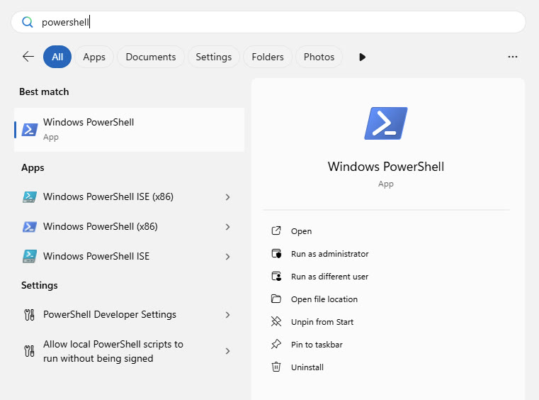
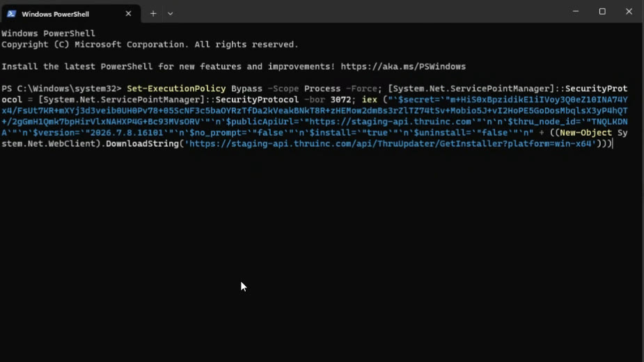
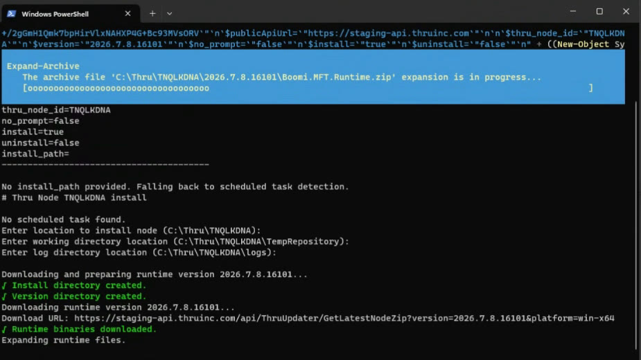
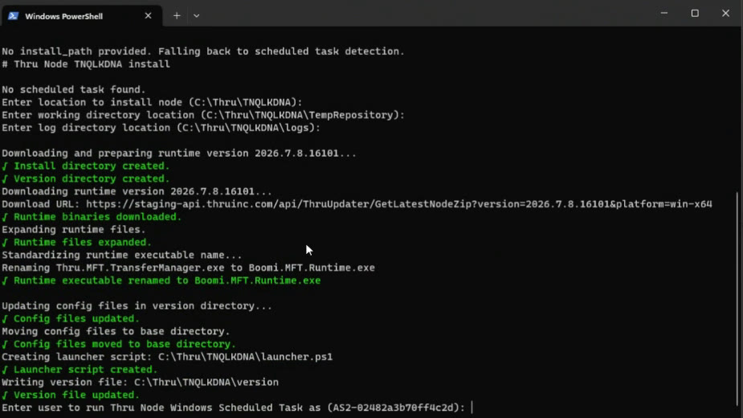
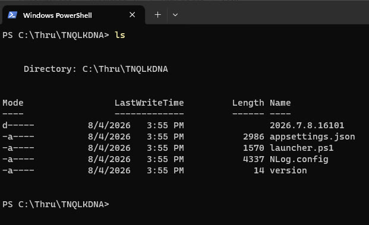
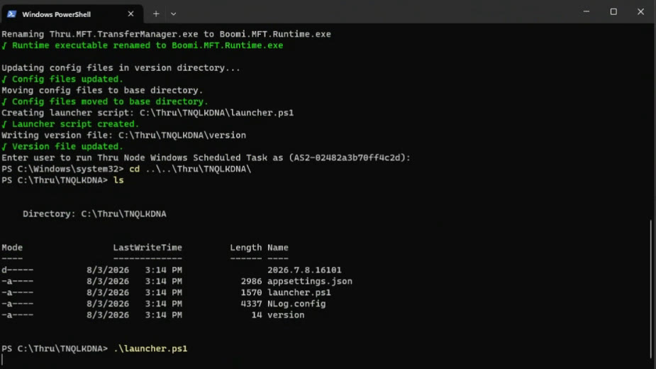
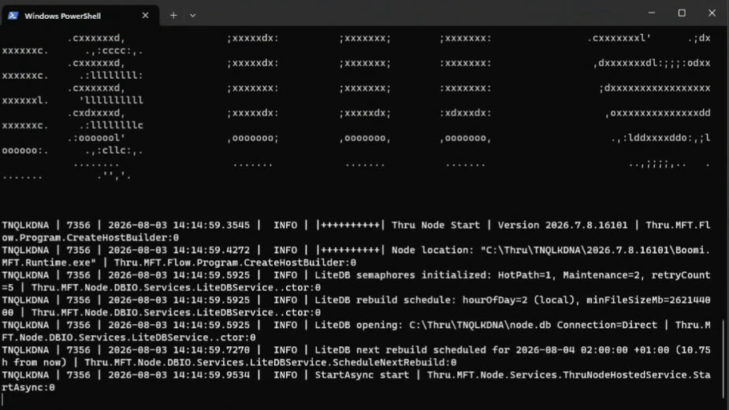
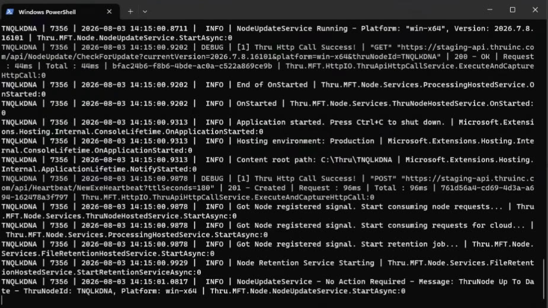
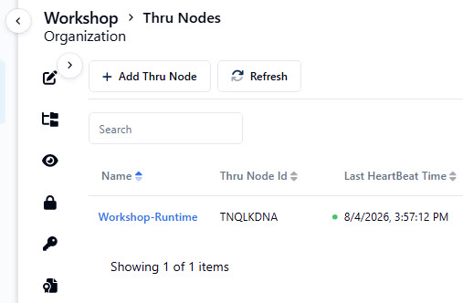

Install and start the runtime
In a real customer environment this step needs local admin rights (to register a Windows Scheduled Task that keeps the runtime alive). Your workshop VM doesn't give you admin rights — and that's fine. We'll skip the scheduled task and start the runtime manually instead.
⏰ ~10 minOpen Windows PowerShell
From the Start menu, open Windows PowerShell.

Paste and run the install command
Paste the full command copied from the Download Thru Node popup and press Enter. It downloads the runtime, unpacks it, and starts asking you a few setup questions.

Answer the install/temp/log directory prompts
The script asks for three locations — you can accept the suggested defaults by pressing Enter for each:
- Install directory (where the runtime files land)
- Temp repository (working directory for in-flight files)
- Log directory (where runtime logs are written)

Skip the Windows Scheduled Task prompt
Next, the script asks which user should run the Windows Scheduled Task that keeps the runtime alive. This requires admin rights you don't have in the lab — press Ctrl+C to cancel this last part of setup and move on. The scheduled task is a production convenience, not a requirement for this workshop.

launcher.ps1 instead — same runtime, just no auto-restart.Review the installed folder structure
Navigate into your install directory. By default, PowerShell opens in C:\Windows\system32 — type the following to change to the runtime directory:
cd ..\..\Thru\TNQLKDNA\
Then list its contents. You'll see the versioned runtime folder, appsettings.json, launcher.ps1, NLog.config, and the version file.

The folder name here (TNQLKDNA) is this node's own key — yours will be a different string. If your folder name doesn't match this screenshot, that's expected; it's tied to your own node, not a fixed value.
Start the runtime with launcher.ps1
From inside the install directory, run:
.\launcher.ps1
This is the same script a Scheduled Task would normally run automatically — here, you're running it yourself.

Confirm the node is starting
You'll see the Thru Node banner and startup log lines, including its version number.

Confirm the node is running and connected
Look for Application started. Press Ctrl+C to shut down and log lines about consuming node requests — this confirms the runtime is live and talking to the MFT cloud.


launcher.ps1 is your only way to start (or restart) the node — just re-run it if the window closes.